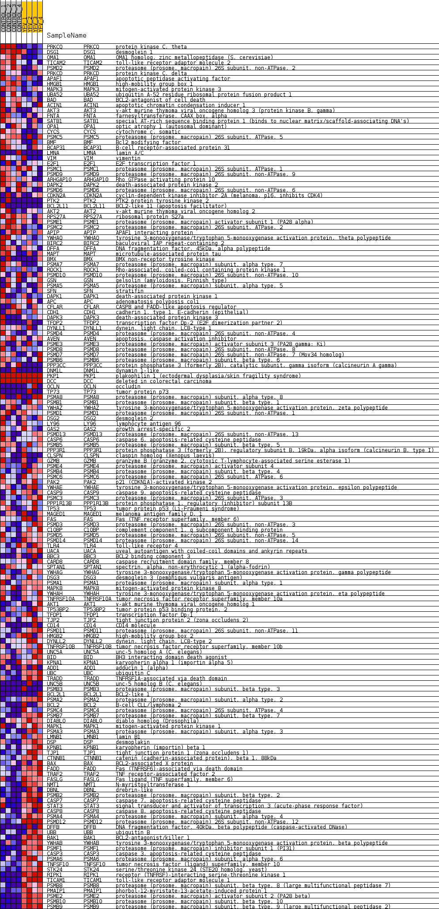
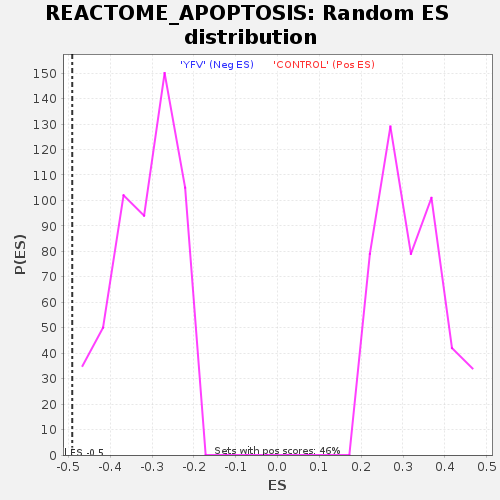

Profile of the Running ES Score & Positions of GeneSet Members on the Rank Ordered List
| Dataset | MATRIZ_GSE99081_collapsed_to_symbols.gsea_CLASE_99081.cls#CONTROL_versus_YFV |
| Phenotype | gsea_CLASE_99081.cls#CONTROL_versus_YFV |
| Upregulated in class | YFV |
| GeneSet | REACTOME_APOPTOSIS |
| Enrichment Score (ES) | -0.4906717 |
| Normalized Enrichment Score (NES) | -1.5638524 |
| Nominal p-value | 0.0 |
| FDR q-value | 0.08619455 |
| FWER p-Value | 0.977 |
| SYMBOL | TITLE | RANK IN GENE LIST | RANK METRIC SCORE | RUNNING ES | CORE ENRICHMENT | |
|---|---|---|---|---|---|---|
| 1 | PRKCQ | protein kinase C, theta | 145 | 1.174 | 0.0080 | No |
| 2 | DSG1 | desmoglein 1 | 303 | 0.946 | 0.0120 | No |
| 3 | OMA1 | OMA1 homolog, zinc metallopeptidase (S. cerevisiae) | 486 | 0.841 | 0.0129 | No |
| 4 | TICAM2 | toll-like receptor adaptor molecule 2 | 667 | 0.755 | 0.0127 | No |
| 5 | PSMD2 | proteasome (prosome, macropain) 26S subunit, non-ATPase, 2 | 711 | 0.738 | 0.0208 | No |
| 6 | PRKCD | protein kinase C, delta | 992 | 0.646 | 0.0128 | No |
| 7 | APAF1 | apoptotic peptidase activating factor | 1347 | 0.561 | -0.0011 | No |
| 8 | HMGB1 | high-mobility group box 1 | 1447 | 0.539 | 0.0006 | No |
| 9 | MAPK3 | mitogen-activated protein kinase 3 | 1456 | 0.538 | 0.0079 | No |
| 10 | UBA52 | ubiquitin A-52 residue ribosomal protein fusion product 1 | 1969 | 0.488 | -0.0168 | No |
| 11 | BAD | BCL2-antagonist of cell death | 2352 | 0.433 | -0.0343 | No |
| 12 | ACIN1 | apoptotic chromatin condensation inducer 1 | 2360 | 0.432 | -0.0285 | No |
| 13 | AKT3 | v-akt murine thymoma viral oncogene homolog 3 (protein kinase B, gamma) | 2398 | 0.426 | -0.0246 | No |
| 14 | FNTA | farnesyltransferase, CAAX box, alpha | 2470 | 0.417 | -0.0229 | No |
| 15 | SATB1 | special AT-rich sequence binding protein 1 (binds to nuclear matrix/scaffold-associating DNA's) | 2567 | 0.402 | -0.0231 | No |
| 16 | OPA1 | optic atrophy 1 (autosomal dominant) | 2807 | 0.365 | -0.0326 | No |
| 17 | CYCS | cytochrome c, somatic | 2888 | 0.354 | -0.0324 | No |
| 18 | PSMC5 | proteasome (prosome, macropain) 26S subunit, ATPase, 5 | 3127 | 0.329 | -0.0425 | No |
| 19 | BMF | Bcl2 modifying factor | 3152 | 0.326 | -0.0392 | No |
| 20 | BCAP31 | B-cell receptor-associated protein 31 | 3349 | 0.304 | -0.0470 | No |
| 21 | LMNA | lamin A/C | 3376 | 0.301 | -0.0442 | No |
| 22 | VIM | vimentin | 3459 | 0.293 | -0.0451 | No |
| 23 | E2F1 | E2F transcription factor 1 | 3531 | 0.286 | -0.0453 | No |
| 24 | PSMC1 | proteasome (prosome, macropain) 26S subunit, ATPase, 1 | 3697 | 0.267 | -0.0517 | No |
| 25 | PSMD9 | proteasome (prosome, macropain) 26S subunit, non-ATPase, 9 | 3732 | 0.263 | -0.0500 | No |
| 26 | ARHGAP10 | Rho GTPase activating protein 10 | 3882 | 0.252 | -0.0556 | No |
| 27 | DAPK2 | death-associated protein kinase 2 | 3883 | 0.252 | -0.0520 | No |
| 28 | PSMD6 | proteasome (prosome, macropain) 26S subunit, non-ATPase, 6 | 3986 | 0.243 | -0.0548 | No |
| 29 | CDKN2A | cyclin-dependent kinase inhibitor 2A (melanoma, p16, inhibits CDK4) | 4000 | 0.243 | -0.0520 | No |
| 30 | PTK2 | PTK2 protein tyrosine kinase 2 | 4094 | 0.236 | -0.0544 | No |
| 31 | BCL2L11 | BCL2-like 11 (apoptosis facilitator) | 4122 | 0.233 | -0.0527 | No |
| 32 | AKT2 | v-akt murine thymoma viral oncogene homolog 2 | 4123 | 0.233 | -0.0493 | No |
| 33 | RPS27A | ribosomal protein S27a | 4134 | 0.232 | -0.0465 | No |
| 34 | PSME1 | proteasome (prosome, macropain) activator subunit 1 (PA28 alpha) | 4391 | 0.212 | -0.0594 | No |
| 35 | PSMC2 | proteasome (prosome, macropain) 26S subunit, ATPase, 2 | 4826 | 0.173 | -0.0839 | No |
| 36 | APIP | APAF1 interacting protein | 4851 | 0.171 | -0.0829 | No |
| 37 | YWHAQ | tyrosine 3-monooxygenase/tryptophan 5-monooxygenase activation protein, theta polypeptide | 4910 | 0.165 | -0.0841 | No |
| 38 | BIRC2 | baculoviral IAP repeat-containing 2 | 4955 | 0.163 | -0.0845 | No |
| 39 | DFFA | DNA fragmentation factor, 45kDa, alpha polypeptide | 4975 | 0.161 | -0.0833 | No |
| 40 | MAPT | microtubule-associated protein tau | 5027 | 0.157 | -0.0842 | No |
| 41 | BMX | BMX non-receptor tyrosine kinase | 5063 | 0.153 | -0.0841 | No |
| 42 | PSMA7 | proteasome (prosome, macropain) subunit, alpha type, 7 | 5238 | 0.134 | -0.0930 | No |
| 43 | ROCK1 | Rho-associated, coiled-coil containing protein kinase 1 | 5290 | 0.131 | -0.0943 | No |
| 44 | PSMD10 | proteasome (prosome, macropain) 26S subunit, non-ATPase, 10 | 5332 | 0.127 | -0.0950 | No |
| 45 | GSN | gelsolin (amyloidosis, Finnish type) | 5340 | 0.127 | -0.0936 | No |
| 46 | PSMA5 | proteasome (prosome, macropain) subunit, alpha type, 5 | 5659 | 0.102 | -0.1119 | No |
| 47 | SFN | stratifin | 5694 | 0.099 | -0.1126 | No |
| 48 | DAPK1 | death-associated protein kinase 1 | 5804 | 0.091 | -0.1180 | No |
| 49 | APC | adenomatosis polyposis coli | 5964 | 0.079 | -0.1268 | No |
| 50 | CFLAR | CASP8 and FADD-like apoptosis regulator | 6000 | 0.076 | -0.1278 | No |
| 51 | CDH1 | cadherin 1, type 1, E-cadherin (epithelial) | 6012 | 0.075 | -0.1274 | No |
| 52 | DAPK3 | death-associated protein kinase 3 | 6051 | 0.071 | -0.1288 | No |
| 53 | TFDP2 | transcription factor Dp-2 (E2F dimerization partner 2) | 6061 | 0.071 | -0.1283 | No |
| 54 | DYNLL1 | dynein, light chain, LC8-type 1 | 6287 | 0.054 | -0.1415 | No |
| 55 | PSMD4 | proteasome (prosome, macropain) 26S subunit, non-ATPase, 4 | 6348 | 0.049 | -0.1445 | No |
| 56 | AVEN | apoptosis, caspase activation inhibitor | 6385 | 0.046 | -0.1461 | No |
| 57 | PSME3 | proteasome (prosome, macropain) activator subunit 3 (PA28 gamma; Ki) | 6661 | 0.029 | -0.1628 | No |
| 58 | PSMD8 | proteasome (prosome, macropain) 26S subunit, non-ATPase, 8 | 6710 | 0.026 | -0.1654 | No |
| 59 | PSMD7 | proteasome (prosome, macropain) 26S subunit, non-ATPase, 7 (Mov34 homolog) | 6854 | 0.018 | -0.1740 | No |
| 60 | PSMB6 | proteasome (prosome, macropain) subunit, beta type, 6 | 7048 | 0.008 | -0.1859 | No |
| 61 | PPP3CC | protein phosphatase 3 (formerly 2B), catalytic subunit, gamma isoform (calcineurin A gamma) | 7211 | 0.000 | -0.1960 | No |
| 62 | DNM1L | dynamin 1-like | 7386 | 0.000 | -0.2068 | No |
| 63 | PKP1 | plakophilin 1 (ectodermal dysplasia/skin fragility syndrome) | 7467 | 0.000 | -0.2118 | No |
| 64 | DCC | deleted in colorectal carcinoma | 7544 | 0.000 | -0.2165 | No |
| 65 | OCLN | occludin | 9249 | -0.000 | -0.3225 | No |
| 66 | TP73 | tumor protein p73 | 9333 | -0.000 | -0.3277 | No |
| 67 | PSMA8 | proteasome (prosome, macropain) subunit, alpha type, 8 | 9584 | -0.007 | -0.3431 | No |
| 68 | PSMB1 | proteasome (prosome, macropain) subunit, beta type, 1 | 9745 | -0.014 | -0.3529 | No |
| 69 | YWHAZ | tyrosine 3-monooxygenase/tryptophan 5-monooxygenase activation protein, zeta polypeptide | 9782 | -0.016 | -0.3549 | No |
| 70 | PSMD1 | proteasome (prosome, macropain) 26S subunit, non-ATPase, 1 | 10102 | -0.030 | -0.3743 | No |
| 71 | DSG2 | desmoglein 2 | 10132 | -0.032 | -0.3756 | No |
| 72 | LY96 | lymphocyte antigen 96 | 10196 | -0.037 | -0.3790 | No |
| 73 | GAS2 | growth arrest-specific 2 | 10379 | -0.050 | -0.3896 | No |
| 74 | PSMD13 | proteasome (prosome, macropain) 26S subunit, non-ATPase, 13 | 10422 | -0.053 | -0.3914 | No |
| 75 | CASP6 | caspase 6, apoptosis-related cysteine peptidase | 10425 | -0.053 | -0.3908 | No |
| 76 | PSMB5 | proteasome (prosome, macropain) subunit, beta type, 5 | 10473 | -0.058 | -0.3929 | No |
| 77 | PPP3R1 | protein phosphatase 3 (formerly 2B), regulatory subunit B, 19kDa, alpha isoform (calcineurin B, type I) | 10557 | -0.065 | -0.3971 | No |
| 78 | CLSPN | claspin homolog (Xenopus laevis) | 10611 | -0.068 | -0.3994 | No |
| 79 | GZMB | granzyme B (granzyme 2, cytotoxic T-lymphocyte-associated serine esterase 1) | 10785 | -0.084 | -0.4089 | No |
| 80 | PSME4 | proteasome (prosome, macropain) activator subunit 4 | 10799 | -0.085 | -0.4085 | No |
| 81 | PSMB4 | proteasome (prosome, macropain) subunit, beta type, 4 | 10839 | -0.088 | -0.4096 | No |
| 82 | PSMC6 | proteasome (prosome, macropain) 26S subunit, ATPase, 6 | 11010 | -0.102 | -0.4187 | No |
| 83 | PAK2 | p21 (CDKN1A)-activated kinase 2 | 11105 | -0.110 | -0.4230 | No |
| 84 | YWHAE | tyrosine 3-monooxygenase/tryptophan 5-monooxygenase activation protein, epsilon polypeptide | 11369 | -0.135 | -0.4374 | No |
| 85 | CASP9 | caspase 9, apoptosis-related cysteine peptidase | 11397 | -0.138 | -0.4370 | No |
| 86 | PSMC3 | proteasome (prosome, macropain) 26S subunit, ATPase, 3 | 11528 | -0.149 | -0.4430 | No |
| 87 | PPP1R13B | protein phosphatase 1, regulatory (inhibitor) subunit 13B | 11678 | -0.162 | -0.4499 | No |
| 88 | TP53 | tumor protein p53 (Li-Fraumeni syndrome) | 11764 | -0.171 | -0.4527 | No |
| 89 | MAGED1 | melanoma antigen family D, 1 | 11791 | -0.173 | -0.4518 | No |
| 90 | FAS | Fas (TNF receptor superfamily, member 6) | 11841 | -0.178 | -0.4522 | No |
| 91 | PSMD3 | proteasome (prosome, macropain) 26S subunit, non-ATPase, 3 | 11846 | -0.178 | -0.4499 | No |
| 92 | C1QBP | complement component 1, q subcomponent binding protein | 11890 | -0.182 | -0.4499 | No |
| 93 | PSMD5 | proteasome (prosome, macropain) 26S subunit, non-ATPase, 5 | 11911 | -0.185 | -0.4485 | No |
| 94 | PSMD14 | proteasome (prosome, macropain) 26S subunit, non-ATPase, 14 | 11924 | -0.186 | -0.4465 | No |
| 95 | TLR4 | toll-like receptor 4 | 11969 | -0.190 | -0.4465 | No |
| 96 | UACA | uveal autoantigen with coiled-coil domains and ankyrin repeats | 11991 | -0.192 | -0.4450 | No |
| 97 | BBC3 | BCL2 binding component 3 | 12134 | -0.207 | -0.4508 | No |
| 98 | CARD8 | caspase recruitment domain family, member 8 | 12260 | -0.219 | -0.4554 | No |
| 99 | SPTAN1 | spectrin, alpha, non-erythrocytic 1 (alpha-fodrin) | 12382 | -0.231 | -0.4596 | No |
| 100 | YWHAG | tyrosine 3-monooxygenase/tryptophan 5-monooxygenase activation protein, gamma polypeptide | 12483 | -0.242 | -0.4623 | No |
| 101 | DSG3 | desmoglein 3 (pemphigus vulgaris antigen) | 12820 | -0.280 | -0.4791 | No |
| 102 | PSMA1 | proteasome (prosome, macropain) subunit, alpha type, 1 | 12891 | -0.287 | -0.4793 | No |
| 103 | MAPK8 | mitogen-activated protein kinase 8 | 13075 | -0.310 | -0.4862 | Yes |
| 104 | YWHAH | tyrosine 3-monooxygenase/tryptophan 5-monooxygenase activation protein, eta polypeptide | 13120 | -0.317 | -0.4843 | Yes |
| 105 | TNFRSF10A | tumor necrosis factor receptor superfamily, member 10a | 13153 | -0.321 | -0.4816 | Yes |
| 106 | AKT1 | v-akt murine thymoma viral oncogene homolog 1 | 13167 | -0.324 | -0.4777 | Yes |
| 107 | TP53BP2 | tumor protein p53 binding protein, 2 | 13192 | -0.327 | -0.4745 | Yes |
| 108 | TFDP1 | transcription factor Dp-1 | 13257 | -0.335 | -0.4736 | Yes |
| 109 | TJP2 | tight junction protein 2 (zona occludens 2) | 13465 | -0.359 | -0.4812 | Yes |
| 110 | CD14 | CD14 molecule | 13468 | -0.360 | -0.4761 | Yes |
| 111 | PSMD11 | proteasome (prosome, macropain) 26S subunit, non-ATPase, 11 | 13564 | -0.374 | -0.4766 | Yes |
| 112 | HMGB2 | high-mobility group box 2 | 13665 | -0.389 | -0.4772 | Yes |
| 113 | DYNLL2 | dynein, light chain, LC8-type 2 | 13675 | -0.391 | -0.4720 | Yes |
| 114 | TNFRSF10B | tumor necrosis factor receptor superfamily, member 10b | 13723 | -0.397 | -0.4692 | Yes |
| 115 | UNC5A | unc-5 homolog A (C. elegans) | 13790 | -0.409 | -0.4673 | Yes |
| 116 | BID | BH3 interacting domain death agonist | 13802 | -0.412 | -0.4620 | Yes |
| 117 | KPNA1 | karyopherin alpha 1 (importin alpha 5) | 13898 | -0.425 | -0.4618 | Yes |
| 118 | ADD1 | adducin 1 (alpha) | 14093 | -0.461 | -0.4671 | Yes |
| 119 | UBC | ubiquitin C | 14182 | -0.479 | -0.4656 | Yes |
| 120 | TRADD | TNFRSF1A-associated via death domain | 14235 | -0.489 | -0.4618 | Yes |
| 121 | UNC5B | unc-5 homolog B (C. elegans) | 14360 | -0.500 | -0.4622 | Yes |
| 122 | PSMB3 | proteasome (prosome, macropain) subunit, beta type, 3 | 14438 | -0.500 | -0.4597 | Yes |
| 123 | BCL2L1 | BCL2-like 1 | 14466 | -0.500 | -0.4541 | Yes |
| 124 | PSMA2 | proteasome (prosome, macropain) subunit, alpha type, 2 | 14672 | -0.535 | -0.4591 | Yes |
| 125 | BCL2 | B-cell CLL/lymphoma 2 | 14719 | -0.546 | -0.4540 | Yes |
| 126 | PSMC4 | proteasome (prosome, macropain) 26S subunit, ATPase, 4 | 14766 | -0.557 | -0.4488 | Yes |
| 127 | PSMB7 | proteasome (prosome, macropain) subunit, beta type, 7 | 14794 | -0.565 | -0.4423 | Yes |
| 128 | DIABLO | diablo homolog (Drosophila) | 14802 | -0.567 | -0.4344 | Yes |
| 129 | MAPK1 | mitogen-activated protein kinase 1 | 14865 | -0.583 | -0.4298 | Yes |
| 130 | PSMA3 | proteasome (prosome, macropain) subunit, alpha type, 3 | 14958 | -0.609 | -0.4267 | Yes |
| 131 | LMNB1 | lamin B1 | 14975 | -0.616 | -0.4187 | Yes |
| 132 | DSP | desmoplakin | 15035 | -0.634 | -0.4132 | Yes |
| 133 | KPNB1 | karyopherin (importin) beta 1 | 15038 | -0.635 | -0.4041 | Yes |
| 134 | TJP1 | tight junction protein 1 (zona occludens 1) | 15044 | -0.636 | -0.3951 | Yes |
| 135 | CTNNB1 | catenin (cadherin-associated protein), beta 1, 88kDa | 15058 | -0.642 | -0.3866 | Yes |
| 136 | BAX | BCL2-associated X protein | 15059 | -0.642 | -0.3773 | Yes |
| 137 | FADD | Fas (TNFRSF6)-associated via death domain | 15085 | -0.649 | -0.3694 | Yes |
| 138 | TRAF2 | TNF receptor-associated factor 2 | 15093 | -0.651 | -0.3604 | Yes |
| 139 | FASLG | Fas ligand (TNF superfamily, member 6) | 15094 | -0.651 | -0.3509 | Yes |
| 140 | NMT1 | N-myristoyltransferase 1 | 15096 | -0.652 | -0.3415 | Yes |
| 141 | DBNL | drebrin-like | 15112 | -0.657 | -0.3329 | Yes |
| 142 | PSMB2 | proteasome (prosome, macropain) subunit, beta type, 2 | 15120 | -0.662 | -0.3237 | Yes |
| 143 | CASP7 | caspase 7, apoptosis-related cysteine peptidase | 15164 | -0.675 | -0.3165 | Yes |
| 144 | STAT3 | signal transducer and activator of transcription 3 (acute-phase response factor) | 15310 | -0.748 | -0.3147 | Yes |
| 145 | CASP8 | caspase 8, apoptosis-related cysteine peptidase | 15454 | -0.808 | -0.3118 | Yes |
| 146 | PSMA4 | proteasome (prosome, macropain) subunit, alpha type, 4 | 15508 | -0.833 | -0.3030 | Yes |
| 147 | PSMD12 | proteasome (prosome, macropain) 26S subunit, non-ATPase, 12 | 15525 | -0.844 | -0.2917 | Yes |
| 148 | DFFB | DNA fragmentation factor, 40kDa, beta polypeptide (caspase-activated DNase) | 15572 | -0.864 | -0.2820 | Yes |
| 149 | UBB | ubiquitin B | 15642 | -0.918 | -0.2730 | Yes |
| 150 | BAK1 | BCL2-antagonist/killer 1 | 15657 | -0.932 | -0.2603 | Yes |
| 151 | YWHAB | tyrosine 3-monooxygenase/tryptophan 5-monooxygenase activation protein, beta polypeptide | 15679 | -0.948 | -0.2478 | Yes |
| 152 | PSMF1 | proteasome (prosome, macropain) inhibitor subunit 1 (PI31) | 15701 | -0.986 | -0.2348 | Yes |
| 153 | CASP3 | caspase 3, apoptosis-related cysteine peptidase | 15747 | -1.033 | -0.2225 | Yes |
| 154 | PSMA6 | proteasome (prosome, macropain) subunit, alpha type, 6 | 15762 | -1.053 | -0.2081 | Yes |
| 155 | TNFSF10 | tumor necrosis factor (ligand) superfamily, member 10 | 15778 | -1.075 | -0.1934 | Yes |
| 156 | STK24 | serine/threonine kinase 24 (STE20 homolog, yeast) | 15823 | -1.164 | -0.1792 | Yes |
| 157 | RIPK1 | receptor (TNFRSF)-interacting serine-threonine kinase 1 | 15848 | -1.206 | -0.1632 | Yes |
| 158 | TICAM1 | toll-like receptor adaptor molecule 1 | 15895 | -1.280 | -0.1474 | Yes |
| 159 | PSMB8 | proteasome (prosome, macropain) subunit, beta type, 8 (large multifunctional peptidase 7) | 16014 | -1.655 | -0.1307 | Yes |
| 160 | PMAIP1 | phorbol-12-myristate-13-acetate-induced protein 1 | 16038 | -1.723 | -0.1071 | Yes |
| 161 | PSME2 | proteasome (prosome, macropain) activator subunit 2 (PA28 beta) | 16061 | -1.905 | -0.0808 | Yes |
| 162 | PSMB10 | proteasome (prosome, macropain) subunit, beta type, 10 | 16150 | -2.694 | -0.0471 | Yes |
| 163 | PSMB9 | proteasome (prosome, macropain) subunit, beta type, 9 (large multifunctional peptidase 2) | 16195 | -3.614 | 0.0027 | Yes |

